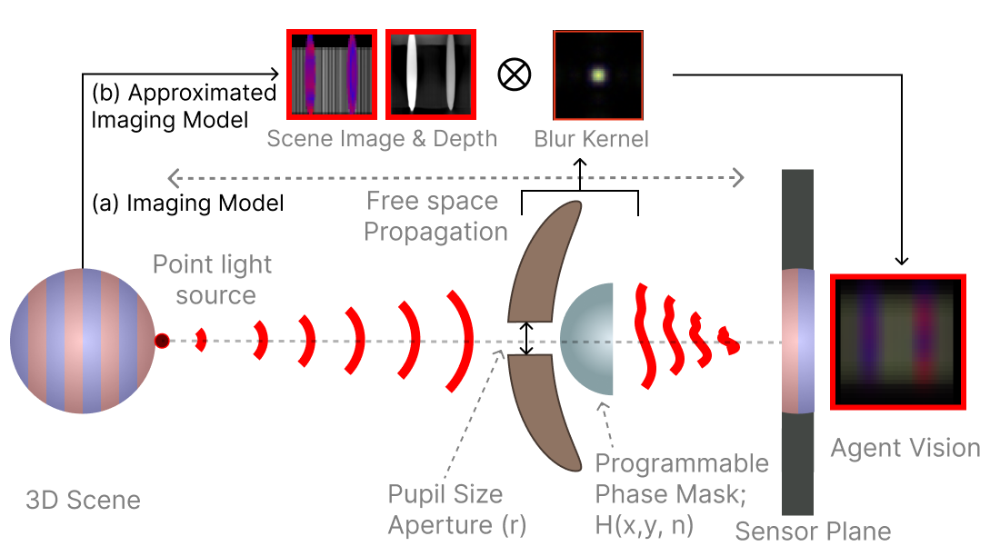

Optics¶
Imaging Model¶
Our model consists of a lens described by a phase mask, refractive index, and amplitude modulating (aperture) elements. We model a retina emulated by a discretized pixel at the sensor plane at a focal length distance away from the pupil.
{kind=link}

Agent’s imaging model. Our simulation implements both wave and geometric optics using a OpenGL (a) Our scene imaging model shows how a depth dependent blur kernel is derived: light from a point source in the 3D scene propagates through free space, passing through a pupil plane which is composed of (1) an aperture with a variable aperture radius (\(r\)) and (2) a programmable phase mask with height map \(H(x,y)\) and refractive index \(n\), before forming an image on the sensor plane. (b) The approximated model uses a 2D convolution between the scene, a depth map, and a single blur kernel using the far-field approximation (i.e., the Point Spread Function) for computational efficiency.¶
All imaging systems capture the scene as an optically encoded image on to the sensor plane. These optical encodings are commonly referred to as the blur or point spread function (PSF), and are dependent on the phase and amplitude of the pupil function along with wavelength and depth of the scene point. We follow the wave propagation model described in to estimate the depth in-dependent PSF.
Given a point light source at a distance \(z\) and the pupil function \(P(x,y) = A \exp(i\phi)\) the response of the agent’s eye can be measure by the PSF. The PSF at the sensor plane \(s\) distance away from the pupil plane is described as:
where \(H_s(\cdot)\) represents the field propagation transfer function for distance \(s\) with \((f_x, f_y)\) as the spatial frequencies given as
where ( k = \(\frac{2\pi}{\lambda}\) ) is the wavenumber; \(U_{in}(x,y)\) denotes the complex-valued wave field immediately before the lens which for a point light source is given as
\(\mathcal{F} \{\cdot\}\) is the 2D Fourier transform; \((x', y')\) are the spatial coordinates on the camera plane, and \((x, y)\) are the coordinates on the lens plane.
The phase modulation function \(t_{\phi}(x, y) = e^{i \frac{2\pi}{\lambda} \phi(x, y)}\) is generated by the lens surface profile \(\phi(x,y)\) which in our case is a square 2D phase-mask array of size 25 pixels that is mutated by the outer evolution loop, where \(\phi(x,y) \in \{0, 0.2, 0.4, 0.6, 0.8, 1.0 \}\). These values are scaled appropriately based on the agent eye’s refractive index.
Finally, our agent’s image formation follows a shift-invariant convolution of the image and the depth-independent PSF to yield the final image, \(I_{\ell}\), perceived by the agent.
where the sub-index \(\ell\) denotes the color channel; \(X_{\ell} \in \mathbb{R}^{w \times h}_{+}\) represents the underlying scene with \(w \times h\) pixels; \(H_{\ell}\) represents the discretized version of the PSF; \(N_{\ell} \in \mathbb{R}^{w \times h}\) denotes the Gaussian noise in the sensor; \(\mathcal{S}_{\ell}(\cdot): \mathbb{R}^{w \times h} \rightarrow \mathbb{R}^{w \times h}\) is the camera response function, modeled as a linear operator; and \(\ast\) denotes the 2D convolution operation.
In practice, the discretized version of the PSF is of size \((H+1, W+1)\) where \((H, W)\) is the resolution of the agent’s eye \(I_{\ell}\) as chosen by the evolutionary search. This is an explicit choice to make the PSF larger than the image to enable a full blur on the eye when the aperture is fully open. The scene image \(X_{\ell}\) is rendered by padding \(I_{\ell}\) of size \((H, W)\) to \(\left( H + (2*\frac{H+1}{2}), W + (2*\frac{W+1}{2}) \right)\). This enables the corner pixels to accumulate light from areas directly due to the aperture size which is more physically-based. This also means that closing the aperture also helps with reducing the total effective field of view of the agent’s eye, which is how the agent controls the blur. For a pinhole eye, the field-of-view becomes equivalent to the encoded fov in the agent’s morphological gene.
Using the Imaging Model¶
You can override the eye configuration to use the optics model either by setting it via the command line or directly in a yaml configuration file. We provide an example of how to create a simple custom app in tools/optics/.
You can run this tool using the following command:
python tools/optics/optics_sweep.py
The script source used to generate this video is shown below:
Python Script
from pathlib import Path
import numpy as np
import torch
from hydra_config import run_hydra
from cambrian import MjCambrianConfig, MjCambrianTrainer
from cambrian.envs.env import MjCambrianEnv
from cambrian.eyes.multi_eye import MjCambrianMultiEye
from cambrian.eyes.optics import (
MjCambrianCircularApertureConfig,
MjCambrianMaskApertureConfig,
MjCambrianOpticsEye,
MjCambrianOpticsEyeConfig,
)
from cambrian.renderer.render_utils import add_text, resize_with_aspect_fill
from cambrian.utils import RenderFrame
def sine_wave(step, min=0.1, max=1):
"""Does one full sine wave over the range of steps.
Step=value between 0 and 1 where 1 is done and 0 is first step.
The wave starts at max, goes to min, and returns to max."""
return min + (max - min) * (1 + np.sin(2 * np.pi * step - np.pi / 2)) / 2
def _optics_render_override(
self: MjCambrianOpticsEye, *, color=(255, 0, 0)
) -> RenderFrame:
image = super(MjCambrianOpticsEye, self).render()
if self._config.scale_intensity:
# Artificially increase the intensity of the image
image = 1 - torch.exp(-image * 10) # scale for visualization
image = add_text(image, "POV", fill=color)
images = [image]
pupil = self._pupil
pupil = torch.clip(torch.abs(pupil), 0, 1).permute(1, 2, 0)
pupil = resize_with_aspect_fill(pupil, *image.shape[:2])
pupil = add_text(pupil, "Pupil", fill=color)
if isinstance(self._config.aperture, MjCambrianCircularApertureConfig):
pupil = add_text(
pupil,
f"Radius: {self._config.aperture.radius:0.2f}",
(0, 12),
fill=color,
size=8,
)
images.append(pupil)
psf = self._get_psf(self._depths[0])
psf = self._resize(psf)
psf = torch.clip(psf, 0, 1).permute(1, 2, 0)
psf = resize_with_aspect_fill(psf, *image.shape[:2])
psf = 1 - torch.exp(-psf * 100) # scale for visualization
psf = add_text(psf, "PSF", fill=color)
images.append(psf)
return torch.cat(images, dim=1)
# Monkey patch the render method to add additional images
MjCambrianOpticsEye.render = _optics_render_override
def step_callback(env: MjCambrianEnv):
eye = env.agents["agent"].eyes["eye"]
if isinstance(eye, MjCambrianMultiEye):
assert len(eye.eyes) == 1
eye = next(iter(eye.eyes.values()))
assert isinstance(
eye, MjCambrianOpticsEye
), f"Expected MjCambrianOpticsEye, got {type(eye)}"
config: MjCambrianOpticsEyeConfig = eye.config
step, max_steps = env.episode_step, env.max_episode_steps
initialize = True
if isinstance(config.aperture, MjCambrianCircularApertureConfig):
config.aperture.radius = sine_wave(step / max_steps)
if isinstance(config.aperture, MjCambrianMaskApertureConfig):
# Only initialize the mask every 20 steps
initialize = step % 20 == 0
if initialize:
eye.initialize()
def main(config: MjCambrianConfig):
assert "agent" in config.env.agents
assert len(config.env.agents["agent"].eyes) == 1
assert "eye" in config.env.agents["agent"].eyes
runner = MjCambrianTrainer(config)
return runner.eval(step_callback=step_callback)
if __name__ == "__main__":
config_path = (Path(__file__).resolve().parent / "configs").resolve()
run_hydra(main, config_path=config_path, config_name="optics_sweep")
This will load the following configuration file:
YAML Configuration
defaults:
- base
- override task: detection
- override /env/agents/eyes@env.agents.agent.eyes.eye.single_eye: optics
- _self_
expname: optics_sweep
trainer:
max_episode_steps: 200
wrappers:
constant_action_wrapper:
# have the agent be stationary
constant_actions:
0: -1
1: 0
env:
debug_overlays_size: 0.6
agents:
agent:
perturb_init_pos: False
init_pos: [-8, 0, null]
eyes:
eye:
resolution: [100, 100]
fov: [90, 45]
goal0:
init_pos: [-4, -1, null]
adversary0:
init_pos: [-4, 1, null]
renderer:
save_mode: MP4
camera:
distance: 0.33
azimuth: -30
elevation: -15
lookat:
- ${env.agents.agent.init_pos.0}
- ${env.agents.agent.init_pos.1}
- -1.5
eval_env:
n_eval_episodes: 1
hydra:
searchpath:
- pkg://cambrian/configs
Adding Realism¶
Although the the objects and scene are still somewhat visible, in reality the scene would be much more difficult to make out. This is because as you decrease aperture size, the total light throughput would proportionally decrease. This means the overall SNR would increase. By default, the light throughput adjustment is disabled. We can enable it and add some noise to make things more realistic.
python tools/optics/optics_sweep.py \
env.agents.agent.eyes.eye.single_eye.scale_intensity=True \
env.agents.agent.eyes.eye.single_eye.noise_std=0.1
Using a Random Mask¶
The above examples use a radially symmetric aperture (see MjCambrianCircularApertureConfig). However, we can directly specify a mask via the MjCambrianMaskApertureConfig class. This mask can be any size up to the rendered image size, and can produce some interesting looking blurring.
python tools/optics/optics_sweep.py \
env/agents/eyes/aperture@env.agents.agent.eyes.eye.single_eye.aperture=random_mask
Training an Agent with Optics¶
We can then train an agent with optics to assess how well it performs with blurring. We can use the following command to train an agent with optics:
bash scripts/run.sh cambrian/main.py --train \
example=detection \
env/agents/eyes@env.agents.agent.eyes.eye.single_eye=optics \
env.agents.agent.eyes.eye.single_eye.aperture.radius=0.75